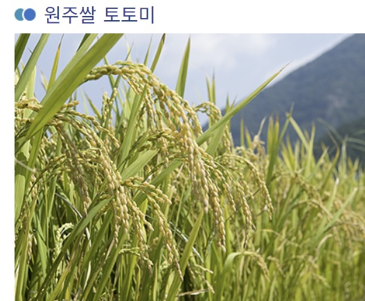
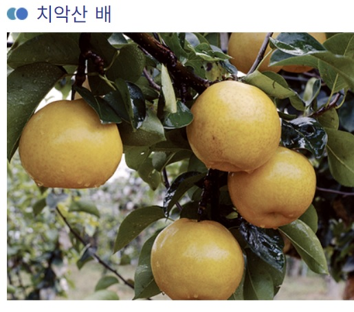
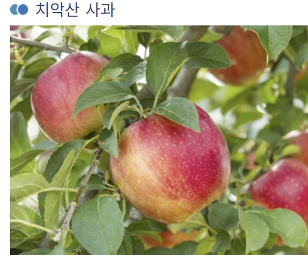
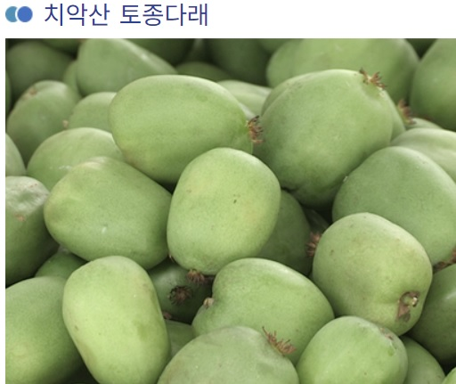
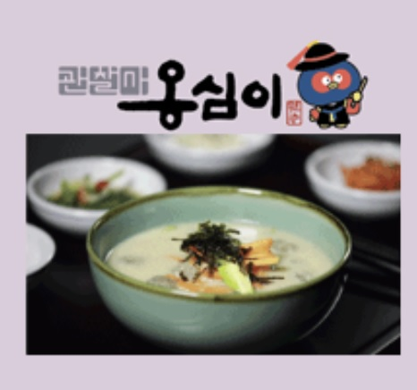
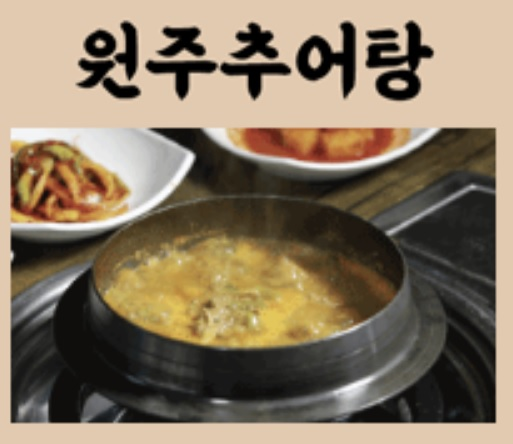
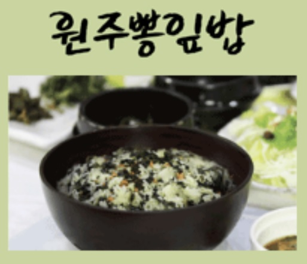
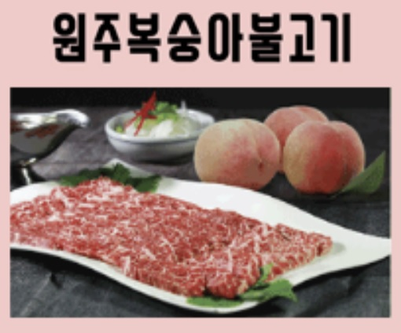

토토미는 원주시 문막 평야에서 생산되는 우수한 쌀로 남한강 상류를 이루는
기름진 섬강 주변에서 재배되어 맛과 질이 우수합니다. 검사원을 초빙하여 추청
과 일반혼합벼를 엄선하여 수매하였습니다. 적기이앙과 적기수확에 장려금을
도입함으로써 영양가와 밥맛이 좋은 고품질 쌀을 생산하고 있습니다. 벼 품종
중 추청은 우리나라의 고품질 쌀입니다.
치악산 배

치악산 배는 조선시대부터 원주 무실동 지역에서 생산되어 왔으며, 일조량이 많은 지역적 특성으로
인해 당도가 높고 과즙이 풍부하며 연한 속살이 시원하게 씹히는 과일로 품질이 우수합니다.
치악산 사과

치악산 사과는 원주 지역의 풍부한 일조량과 일교차가 큰 자연환경, 섬강의 맑은 물로 재배되어
색깔이 곱고 맛이 일품입니다. 원주시는 치악산 사과를 명품화 농산물로 지정하고 유기농 생산을
적극 지원하고 있습니다.
치악산 토종다래

원주 토종다래는 치악산의 맑은 공기와 섬강의 풍부한 수량으로 미네랄과 유기물을 먹고 자라
당도가 매우 높고 비타민C가 풍부한 원주의 향토과실이며 전국에서 가장 많이 생산되는 지역 특화작물입니다.

관찰사옹심이는 "새알심"의 강원도 방언으로 출생, 탄생, 다산 등 고유한 정신이 깃들어 있다.
특히 원주는 감자 시배지이면서 조선 500년간 감원감영이 자리한 고장으로 이 곳의 수장 관찰사가
백성들의 기근을 해결하기 위해 여러 지역을 순행하며 감자재배를 권장하고 감자로 만든 음식을
맛보았다하여 감자옹심이를 "관찰사 옹심이"라 칭하였다.
원주추어탕

원주추어탕은 살이 통통한 싱싱한 미꾸라지를 통째로 삶아 갈아 고추장 풀고 갖은 채소를 넣어
푹 끓여서 만들며, 다양한 영상성분들이 골고루 함유되어 피로한 몸에 활력을 불어넣어 주고,
원기를 회복하는데 탁월한 효능을 발휘하는 최고의 보양음식이다.
원주뽕잎밥

원주뽕잎밥은 어린뽕잎에 생들기름과 간장으로 양념하여 지은 밥으로 구수한 감칠맛이
일품이며 뽕잎은 칼슘과 철분을 비롯한 50여종의 미네랄, 아미노산(24종 이상),
폴리테놀 루핀을 함여하고 있으며 식이 섬유가 풍부하고 다이어트에 효과적이다.
원주복숭아불고기

원주복숭아불고기는 과즙이 풍부한 치악산복숭아를 갈아 치악산한우를
숙성시켜 육질이 부드럽고 맛과 풍미가 일품이다. 복숭아는 알카리성 식품으로
항산화 작용을 하는 비타민C가 풍부하여 노화방지, 숙취해소, 니코틴 해독, 피로회복에 좋다.